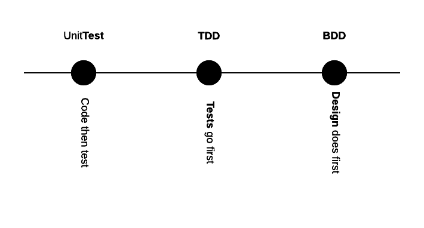
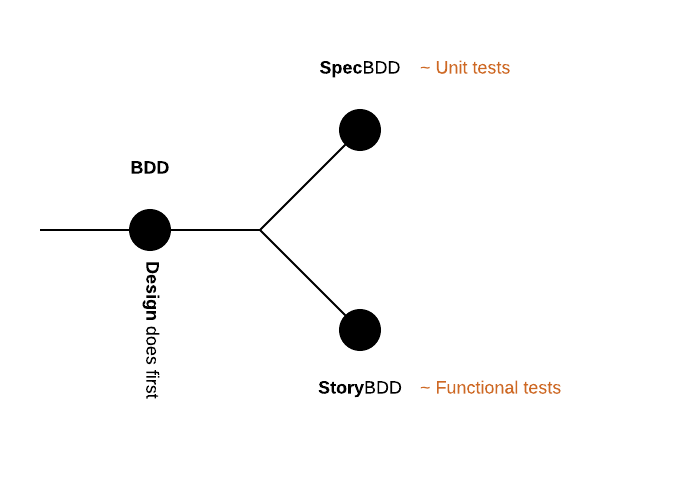
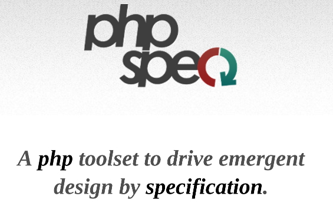
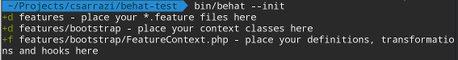
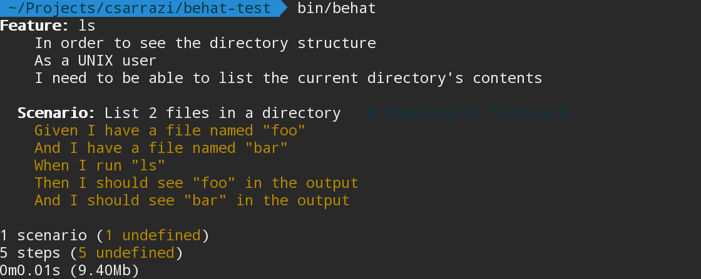
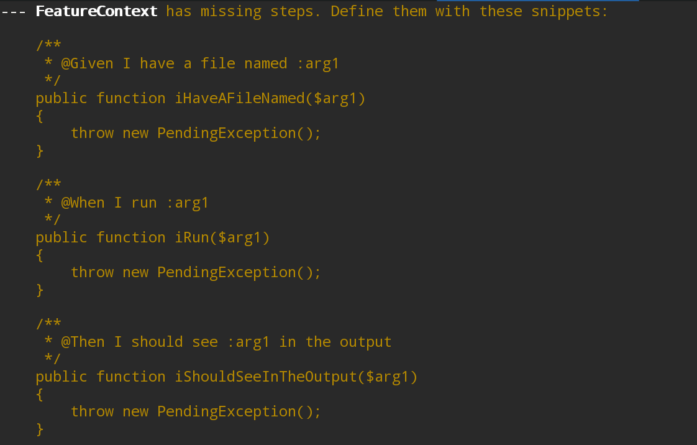
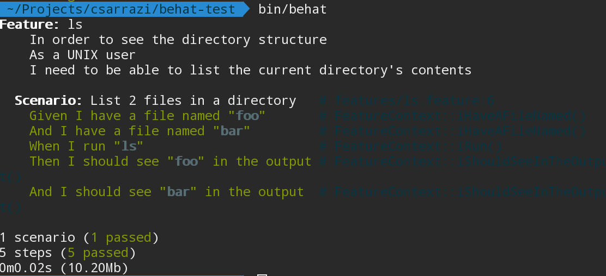
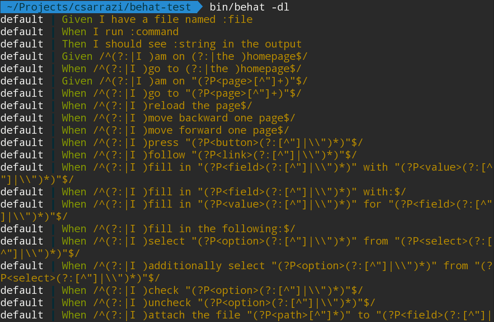
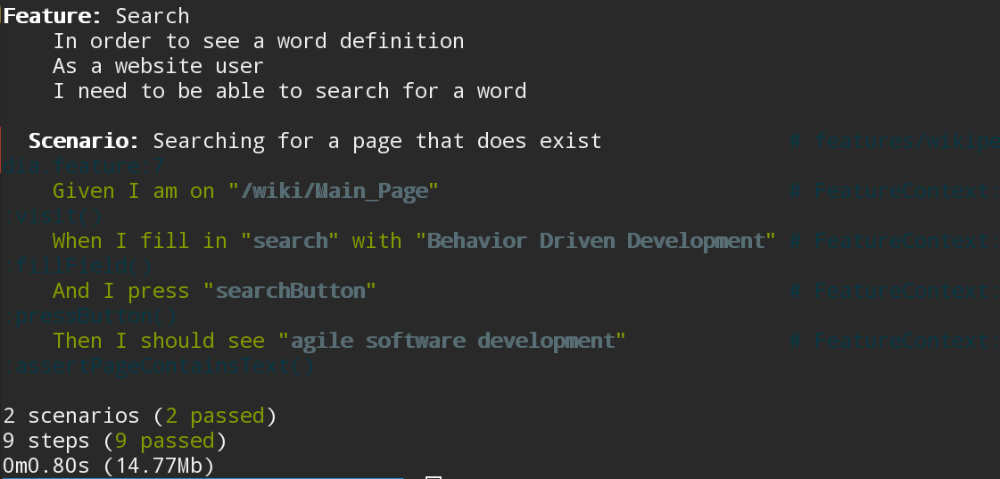
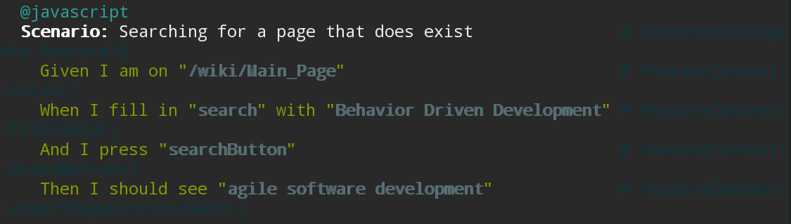

Getting started with Behat
Created by Charles Sarrazin / @csarrazi
About BDD
Evolution of Test-Driven Development

Evolution of Test-Driven Development

Specification BDD

Scenario-oriented BDD
(Story BDD)
Problem
Create a single vocabulary and process for planning, implementing and testing a feature, with a focus on the behavior of the feature.
Solution
- Define business value for the features
- Prioritize features by their business value
- Describe them with readable scenarios
- And only then - implement them
Enter Gherkin
A project consists in many features
These need to be planned, written and shared
Gherkin
A structured language to describe a feature
Example
Feature: {custom_title}
In order to {A}
As a {B}
I need to {C}{A}- The benefit or value of the feature{B}- the role (or persona) who will benefit{C}- short feature description
Solution
- Define business value for the features
- Prioritize features by their business value
- Describe them with readable scenarios
- And only then - implement them
Read news in French
Feature: I18n
In order to read news in french
As a french user
I need to be able to switch localeSolution
- Define business value for the features
- Prioritize features by their business value
- Describe them with readable scenarios
- And only then - implement them
Prioritize...
1) Feature: News admin panel
2) Feature: I18n
3) Feature: News list APISolution
- Define business value for the features
- Prioritize features by their business value
- Describe them with readable scenarios
- And only then - implement them
Describe...
Feature: News admin panel
In order to maintain a list of news
As a site administrator
I need to be able to edit news
Scenario: Add new article
Given I am on the "/admin/news" page
When I click "New Article"
And I fill in "Title" with "Learned BDD"
And I press "Save"
Then I should see "A new article was added"Given
Defines the initial state of the system for the scenario
When
Describes the action taken with the person / role
Then
Describes the observable system state after the action has been performed
And/But
Can be added to create multiple Given/When/Then lines
Example #2
Scenario: List available articles
Given there are 5 news articles
And I am on the "/admin" page
When I click "News Administration"
Then I should see 5 news articlesGherkin
gives us a consistent language for describing features and their scenarios...
... now let's turn them into tests!
Introducing Behat
Having a standard way of describing features is cool...
... executing those sentences as functional tests is just awesome
What is Behat?
Behat does one simple thing:
It maps each step** to a PHP Callback
Behat "executes" your scenarios, reading each step and calling the function associated with it
**: each line in a scenario is called a "step"
Installing Behat
Behat is just a library that can be installed easily in any project using Composer
In your project directory...
composer require "behat/behat"And... That's it!
The most important product of the installation is an executable bin/behat file
Behat in a project
To use Behat in a project, you need:
- Actual
*.featurefiles to be executed - A
FeatureContext.phpfile that holds the PHP callbacks for each step - (optional) A
behat.ymlconfiguration file
$ php bin/behat --init

<php
use Behat\Behat\Context\Context;
use Behat\Behat\Context\SnippetAcceptingContext;
use Behat\Gherkin\Node\PyStringNode;
use Behat\Gherkin\Node\TableNode;
class FeatureContext implements Context, SnippetAcceptingContext
{
/**
* Initializes context.
*
* Every scenario gets its own context instance.
* You can also pass arbitrary arguments to the
* context constructor through behat.yml.
*/
public function __construct()
{
}
}
Example
Testing the "ls" command
Describing the feature
Feature: ls
In order to see the directory structure
As a UNIX user
I need to be able to list the current directory's contentsFirst scenario
If you have two files in a directory, and you're running the command, you should see them listed.
Writing the first scenario
Scenario: List 2 files in a directory
Given I have a file named "foo"
And I have a file named "bar"
When I run "ls"
Then I should see "foo" in the output
And I should see "bar" in the outputRun behat
$ php bin/behat


Copy the definition in the FeatureContext
/**
* @Given I have a file named :arg1
*/
public function iHaveAFileNamed($arg1)
{
throw new PendingException();
}
/**
* @When I run :arg1
*/
public function iRun($arg1)
{
throw new PendingException();
}
/**
* @Then I should see :arg1 in the output
*/
public function iShouldSeeInTheOutput($arg1)
{
throw new PendingException();
}
Replace the code with what it should really do
/**
* @Given I have a file named :file
*/
public function iHaveAFileNamed($file)
{
touch($file);
}
/**
* @When I run :command
*/
public function iRun($command)
{
exec($command, $output);
$this->output = trim(implode("\n", $output));
}
/**
* @Then I should see :string in the output
*/
public function iShouldSeeInTheOutput($string)
{
\PHPUnit_Framework_Assert::assertContains($string, explode("\n", $this->output));
}
And enjoy!

What Behat does
- Scenario Step:
Given I have a file named "foo" - Regex:
@Given I have a file named :file - Definition:
public function iHaveAFileNamed($file) - Do work:
touch($file);
Pass / Fail: Each step is a "test", which passes *unless* an exception is thrown
Mink
Controlling a real browser with Behat
What is Mink?
- A standalone library to use PHP to control a "browser"
- One easy API to command Selenium, Goutte, ZombieJS, etc.
Example
use Behat\Mink\Driver\GoutteDriver;
use Behat\Mink\Session;
// change *only* this line to run
// in Selenium, etc
$driver=new GoutteDriver();
$session=new Session($driver);Example(2)
// visit a page
$session->visit('http://behat.org');
echo'URL : '.$session->getCurrentUrl();
echo'Status: '.$session->getStatusCode();Example(3)
$page=$session->getPage();
// drill down into the page
$ele=$page->find('css','li:nth-child(4) a');
echo'Link text is: '.$ele->getText();
echo'href is: '.$ele->getAttribute('href');
// click the link// (you can also fill out forms)
$ele->click();Mink and Behat
Integration
Behat ← MinkExtension →Mink
- An "Extension" is like a Behat plugin
- The MinkExtension makes using Mink inside Behat a matter of configuration
Installing Mink and MinkExtension
- Update
composer.jsonto include- Mink
- MinkExtension
- Goutte, BrowserKit or Selenium2 drivers for Mink
- Update the vendor libraries
$ php composer update
{
"require-dev": {
"behat/behat": "^3.0",
"behat/mink": "^1.7",
"behat/mink-extension": "^2.1",
"behat/mink-goutte-driver": "^1.2",
"behat/mink-selenium2-driver": "^1.3"
},
"config": {
"bin-dir": "bin/"
}
}Goal: To easily use Mink inside FeatureContext
Bootstrap MinkExtension
# behat.yml
default:
extensions:
Behat\MinkExtension:
goutte: ~
selenium2: ~
# The base URL to app you're testing
base_url: http://en.wikipedia.org/behat.yml is the Behat configuration file and can contain much more than you see here
Extending MinkContext
use Behat\MinkExtension\Context\MinkContext;
class FeatureContext extends MinkContextExtending MinkContext gives us 2 things...
Access to a Mink session
class FeatureContext extends MinkContext
{
public function doSomething()
{
$session = $this->getSession();
$session->visit('http://behat.org');
}
// ...
}Our custom definitions can now command a browser!
We inherit a pile of great definitions
Before extending MinkContext:

The -dl option prints all available definitions
After extending MinkContext:

In other words
We can write some tests for our app without writing any PHP code
Suppose we want to test Wikipedia
# features/wikipedia.feature
Feature: Search
In order to see a word definition
As a website user
I need to be able to search for a word
Scenario: Searching for a page that does exist
Given I am on "/wiki/Main_Page"
When I fill in "search" with "Behavior Driven Development"
And I press "searchButton"
Then I should see "agile software development"These 4 definitions are bundled with MinkContext
Celebrate!

Want to run the tests in Selenium?
Add @javascript
Feature: Search
In order to see a word definition
As a website user
I need to be able to search for a word
@javascript
Scenario: Searching for a page that does exist
Given I am on "/wiki/Main_Page"
When I fill in "search" with "Behavior Driven Development"
And I press "searchButton"
Then I should see "agile software development"Yep, that's all!
You simply need to tag the test using @javascript
Installing Selenium
$ wget http://selenium-release.storage.googleapis.com/2.53/selenium-server-standalone-2.53.0.jar
$ java -jar selenium-server-standalone-2.53.0.jarRe-run the tests
